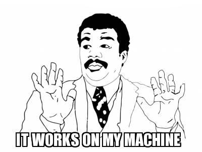

Introduzione a Docker
Learning Friday del 17/04/2020
Alessandro Accardo
Chi sono
Ciao, sono Alessandro Accardo, forse vi ricorderete di me per un altro Learning Friday sul framework Spring.
Ecco chi sono.
- Senior Developer
- Solution Architect
- Specializzato in soluzioni Cloud-Native
- Nerd
- Appassionato di tecnologia
- Hacker
Cos'è Docker
Docker è un software, innanzi tutto. Viene usato come sinonimo di container, per quanto i container non siano effettivamente nati con esso.
Alla base di questa tecnologia c'è una tecnica chiamata sandboxing.
Spesso, molto (troppo) spesso, i container vengono paragonati alle VM, macchine virtuali, quando invece poco e male si accostano tra loro, per quanto comunque le sandbox effettivamente virtualizzano, ma a livello di sistema operativo e non a livello hardware (quindi due livelli sotto).
Ma veniamo al punto: cos'è, a questo punto, un container?
Container e sandbox, un amore lungo una vita
Andando un po' indietro con la storia, il trascorso di queste tecnologie non è di certo nuovo. Troviamo degli embrioni di quello che oggi è un container addirittura in Unix.
Questi proto-container (perdonate la bestemmia) erano già chiamati sandbox, sostanzialmente degli userspace isolati tra loro a cui il sistema operativo fornisce risorse distribuendole (più o meno) equamente.
I casi più notevoli sono la chroot di Unix 7, la jail di BSD prima e di Linux dopo e le Zone di solaris.
A un certo punto, il kernel Linux tira fuori una tecnologia chiamata LXC, linux containers, e su questa è stato sviluppato Docker, che inizialmente (nel 2008!) era uno script python.
Perché?
Una volta capito a grandi linee cos'è Docker e da dove viene la domanda spontanea è: perché.
Quale problema risolve Docker? Per quale motivo è stato sviluppato? E perché ora è così popolare?

L'industria del software è cambiata.
- Prima:
- applicazioni monolitiche
- cicli di sviluppo lunghi
- ridimensionamento lento
- Adesso:
- servizi disaccoppiati
- miglioramenti iterativi veloci
- ridimensionamento veloce
Proprio per la velocità di produzione richiesta attualmente è diventato indispensabile efficientare il ciclo che va dalla scoperta della necessità di una feature alla sua messa in produzione.
Inoltre, i sistemi di oggi sono molto complessi proprio per supportare un sempre maggiore numero di requisiti. Questo rende necessaria l'installazione di diverse componenti software da dover gestire contemporaneamente.
Come funziona
Veniamo alla parte importante: come funziona, internamente, Docker?

Il Docker Engine, o più comunemente Docker, si compone principalmente dei seguenti componenti:
- Docker daemon
- Il demone Docker è ciò che esegue effettivamente i comandi inviati dal client Docker, come la costruzione, l'esecuzione e la distribuzione dei container. Il Docker Daemon viene eseguito sul computer host, ma da utente semplice non comunichi mai direttamente con il Daemon. Il client Docker può essere eseguito anche sul computer host, ma non è necessario. Può essere eseguito su un altro computer e comunicare con il Docker Daemon in esecuzione sul computer host.
- Docker client
- Docker Client è ciò con cui l'utente finale di Docker comunica. Pensalo come l'interfaccia utente di Docker. Ad esempio, quando si esegue un comando, si comunica al client Docker, che comunica le istruzioni al daemon Docker.
Anatomia di un container

C'è molta confusione sui nomi, e l'idea qui è quella di ridurre al minimo la frizione esplicitandoli per bene.
- Distribuzione
- Un insieme opinionato di software e configurazioni di base che costituiscono un sistema operativo
- Kernel
- Il cuore del sistema operativo
- Bootfs
- La base su cui si costruiscono le immagini base, il nostro "bootloader"
- Base Image
- L'immagine di base, che rappresenta la distribuzione di software di base minimo per far funzionare un'applicazione. Tipicamente le distro maggiori mettono a disposizione una base image per docker
- Image
- Sempre a partire da un'altra immagine, o al limite dall'immagine di base, modifica di quest'ultima per includere un software o una configurazione non presente nello strato sottostante
- Container
- L'instanza in esecuzione di una immagine
Partiamo dal principio, il filesystem e l'immagine di base
Bootfs è il filesystem messo a disposizione dal kernel Linux come base per uno userspace isolato LXC, o linux container.
Su questo componente del sistema operativo si costruisce l'immagine di base, che di solito è una distribuzione linux, o in generale una distribuzione di software di base (molto, molto base).
La Docker Image, la base del container
Una Docker Image si compone di diversi strati, o layer. Ogni strato si poggia sui precedenti andando ad aggiungere qualcosa allo userspace finale che costituirà poi l'immagine usata quando si crea un container.
Il container
Alla fine (o in cima, a seconda della prospettiva) della catena troviamo il container, cioè l'aggeggio dentro cui poter eseguire software che sarà a quel punto isolato dal resto del sistema operativo.
I container possono essere usati per i più vari utilizzi, si pensi a software come browsh che non offre un servizio, ma un normale software nel suo ambiente protetto di esecuzione.
Dockerfile
Questo di seguito è l'esempio di un dockerfile, commentiamolo insieme.
FROM ubuntu:18.04 MAINTAINER klez@pm.me RUN apt-get update && apt-get install -y mongodb && apt-get install nano # Create the MongoDB data directory RUN mkdir -p /data/db # Expose port #37017 from the container to the host EXPOSE 37017 #Start MongoDb CMD ["mongod", "-f", "/etc/mongodb.conf"]
Saluti
Grazie a tutti per essere arrivati fin qui!